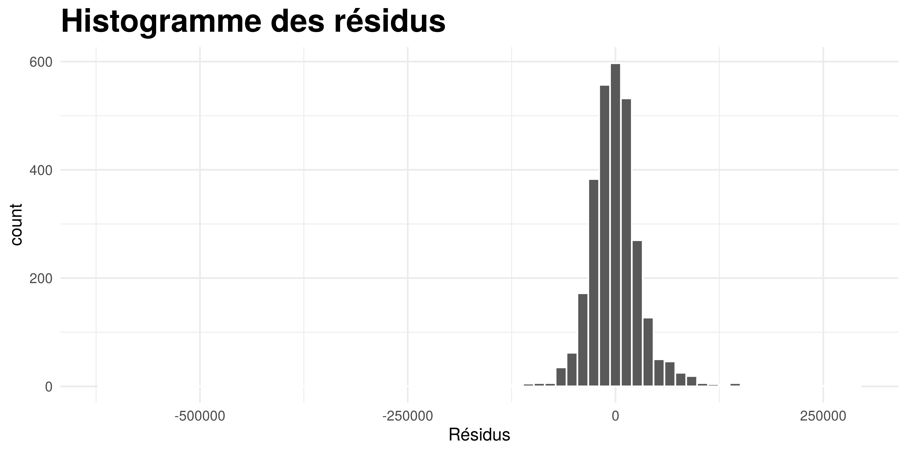

3 La régression linéaire multiple
Nous voulons construire un modèle expliquant le prix de vente de la maison en fonction des caractéristiques.
Le modèle se présentera sous forme d’une équation comme celle-ci: \[ SalePrice = \alpha + \beta * X \] où \(\alpha\) est la constante et \(X\) les variables explicatives et \(\beta\) les coefficients associés à chacune des variables explicatives.
Call:
lm(formula = Sale_Price ~ ., data = base_export)
Residuals:
Min 1Q Median 3Q Max
-611577 -18168 -1914 15215 291823
Coefficients: (1 not defined because of singularities)
Estimate Std. Error t value Pr(>|t|)
(Intercept) 173248.379363 1034265.831414 0.1675 0.8669816
Lot_Frontage 87.803069 21.071267 4.1670 3.177e-05 ***
Lot_Area 0.276464 0.092621 2.9849 0.0028603 **
Year_Built 366.052233 40.899707 8.9500 < 2.2e-16 ***
Year_Remod_Add 520.804027 43.831432 11.8820 < 2.2e-16 ***
Mas_Vnr_Area 39.274696 4.390740 8.9449 < 2.2e-16 ***
BsmtFin_SF_1 120.551239 399.798684 0.3015 0.7630321
BsmtFin_SF_2 -11.081489 4.231329 -2.6189 0.0088670 **
Bsmt_Unf_SF -12.311265 2.668471 -4.6136 4.129e-06 ***
Total_Bsmt_SF 37.970421 3.310015 11.4714 < 2.2e-16 ***
First_Flr_SF 61.330334 4.008845 15.2988 < 2.2e-16 ***
Second_Flr_SF 60.450368 3.540552 17.0737 < 2.2e-16 ***
Low_Qual_Fin_SF 12.832757 14.791305 0.8676 0.3856919
Gr_Liv_Area NA NA NA NA
Bsmt_Full_Bath 6293.288284 1856.188624 3.3904 0.0007072 ***
Bsmt_Half_Bath -1858.613118 2914.083872 -0.6378 0.5236520
Full_Bath 1920.740936 1998.496886 0.9611 0.3365858
Half_Bath -2438.265685 1935.228354 -1.2599 0.2077936
Bedroom_AbvGr -9685.349040 1216.270979 -7.9632 2.387e-15 ***
Kitchen_AbvGr -34847.281701 3621.088385 -9.6234 < 2.2e-16 ***
TotRms_AbvGrd 4500.668956 881.131470 5.1078 3.470e-07 ***
Fireplaces 7560.968660 1265.264411 5.9758 2.569e-09 ***
Garage_Cars 8144.488352 2093.470742 3.8904 0.0001023 ***
Garage_Area 20.914087 7.215244 2.8986 0.0037765 **
Wood_Deck_SF 23.006374 5.795860 3.9694 7.379e-05 ***
Open_Porch_SF -6.849731 10.854623 -0.6310 0.5280624
Enclosed_Porch 27.890298 11.454418 2.4349 0.0149561 *
Three_season_porch 10.081139 26.568812 0.3794 0.7043926
Screen_Porch 62.867980 12.296415 5.1127 3.382e-07 ***
Pool_Area -67.534786 19.396372 -3.4818 0.0005054 ***
Misc_Val -9.683926 1.196666 -8.0924 8.517e-16 ***
Mo_Sold 87.976438 249.179130 0.3531 0.7240654
Year_Sold -941.543008 514.104536 -1.8314 0.0671401 .
Overall_Qual 4832.147729 1133.167888 4.2643 2.070e-05 ***
Overall_Cond -2726.736579 1385.223170 -1.9684 0.0491120 *
---
Signif. codes: 0 '***' 0.001 '**' 0.01 '*' 0.05 '.' 0.1 ' ' 1
Residual standard error: 35862 on 2896 degrees of freedom
Multiple R-squared: 0.80075, Adjusted R-squared: 0.79848
F-statistic: 352.68 on 33 and 2896 DF, p-value: < 2.22e-16La significativité globale de ce modèle de régression multiple est très bonne comme l’indique le test de Fisher. Le modèle explique 80% de la variance des prix de vente, ce qui est très bien pour des données transversales. La grande majorité des variables que nous avions sélectionnées pour inclure dans le modèle se sont montrés significatifs. Le test de Student effectué sur chacun des coefficients montre les différents degrés de significativités des coefficients.
A cause de multicolinéarité, la variable Gr_Liv_Area qui représente la surface habitable hors étage de la maison a été enlevée du modèle.
Les variables sont toutes en niveau, nous pouvons donc interpréter les coefficients dans l’unité de la variable. Par exemple l’augmentation de la superficie du terrain (Lot_Area) d’un pied carré augmente le prix de la maison de 87.8 dollars, toute chose égale par ailleurs.
3.0.1 Le test d’inflation de la variance (VIF)
Il n’est pas possible de réaliser le test d’inflation de la variance (Variance Inflation Factor) sur le modèle car le coefficient de la variable Gr_Liv_Area n’a pas été calculé à cause de la multicolinéarité. Pour pouvoir quantifier la multicolinéarité entre les variables, nous devons donc estimer un nouveau modèle dans lequel la variable Gr_Liv_Area est absente.
Voici donc les résultats du test VIF que trouvons lorsque la variable Gr_Liv_Area est omise.
library(car)
mod2 <- lm(Sale_Price~., data = subset(base_export, select = -Gr_Liv_Area))
kable(sort(vif(mod2), decreasing = TRUE), col.names = "VIF",
caption = "Test d'inflation de la variance (VIF)")| VIF | |
|---|---|
| Garage_Cars | 5.7824481 |
| First_Flr_SF | 5.6211017 |
| Garage_Area | 5.4901912 |
| Second_Flr_SF | 5.2394381 |
| Total_Bsmt_SF | 4.8520670 |
| TotRms_AbvGrd | 4.3749371 |
| Year_Built | 3.4850622 |
| Bsmt_Unf_SF | 3.1331090 |
| Full_Bath | 2.7810995 |
| Bedroom_AbvGr | 2.3082980 |
| Bsmt_Full_Bath | 2.1608346 |
| Half_Bath | 2.1548278 |
| Year_Remod_Add | 1.9039890 |
| BsmtFin_SF_1 | 1.8157567 |
| Overall_Cond | 1.5939918 |
| Fireplaces | 1.5305911 |
| Mas_Vnr_Area | 1.4010673 |
| Kitchen_AbvGr | 1.3685725 |
| Enclosed_Porch | 1.2292602 |
| Open_Porch_SF | 1.2220136 |
| Wood_Deck_SF | 1.2215701 |
| Lot_Area | 1.2131699 |
| BsmtFin_SF_2 | 1.1665670 |
| Bsmt_Half_Bath | 1.1625433 |
| Overall_Qual | 1.1515654 |
| Lot_Frontage | 1.1347730 |
| Pool_Area | 1.0857374 |
| Screen_Porch | 1.0832776 |
| Low_Qual_Fin_SF | 1.0686235 |
| Misc_Val | 1.0460663 |
| Year_Sold | 1.0434501 |
| Mo_Sold | 1.0419652 |
| Three_season_porch | 1.0161864 |
Puisqu’il n’y a aucune valeur VIF supérieure à 10, il est tentant d’affirmer qu’il n’y a pas de multicolinéarité. Car nous avons vu dans l’analyse des corrélations que certaines variables étaient fortement corrélées. Ainsi bien qu’il n’y a pas de relation linéaire exacte entre les variables, il existe des pseudo-colinéarités relativement fortes entre les variables.
Nous pouvons vérifier les autres hypothèses des OLS pour déduire la colinéarité.
3.0.2 Vérifions l’hypothèse de normalité des résidus
Nous pouvons représenter un histogramme de la distribution des résidus du modèle que nous venons d’estimer. L’une des hypothèses importantes des MCO est la normalité des résidus. Nous pouvons visuellement à l’aide de l’histogramme des résidus dire si les résidus suivent une loi normale.
ggplot() + aes(x = mod$residuals) +
geom_histogram(bins = 70, color = "white") +
theme_minimal() +
labs(title = "Histogramme des résidus", x= "Résidus") +
theme(plot.title = element_text(face = "bold", size = 20))
A l’aide de l’histogramme nous observons que la distribution ressemble à une loi normale, mais elle est fortement dirigée vers la droite.
Nous pouvons faire le test de Shapiro-Wilk pour tester plus formellement la normalité des résidus. L’hypothèse nulle de ce test est que la distribution est normalement distribuée.
Shapiro-Wilk normality test
data: mod$residuals
W = 0.811785, p-value < 2.22e-16Ici la p-value est inférieure à 5% donc, nous rejetons cette hypothèse nulle, la distribution ne suit pas une loi normale.
Dès lors que les résidus ne suivent pas une loi normale, les estimations faites par les OLS sont biaisées. Il importe donc d’utiliser d’autres méthodes d’estimations pour construire le modèle.